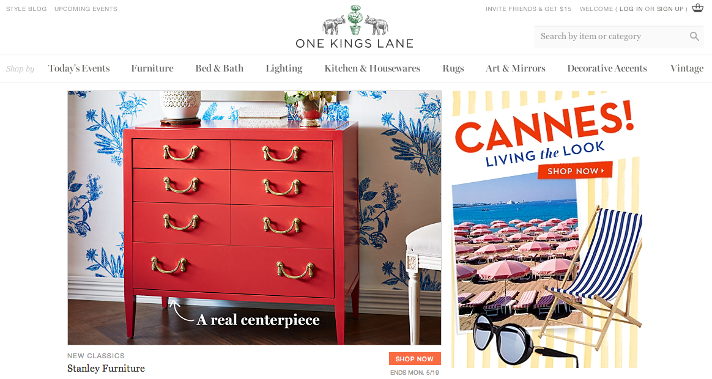
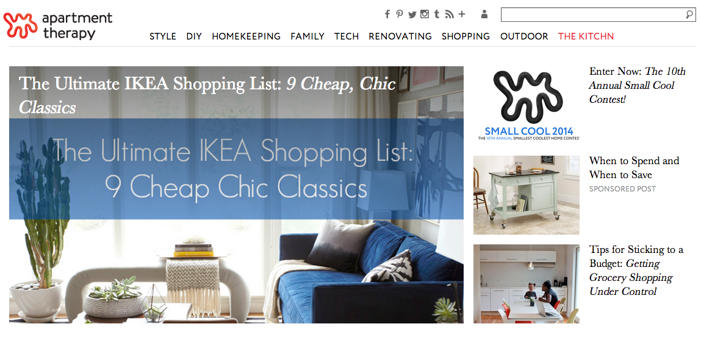

Technical Blog!
Favorite Websites
1stDibs

- Why is this one of your favorite sites?
Beautiful designer furniture, rare antiques, vintage couture, and in-depth interviews with artists, architects, interior designers and art dealers.
- What area of the site is your eye drawn to when looking at the homepage? Stand back further, what area is your eye drawn to now? Is that area the most important area of the site?
The featured products stand out immediately. The slow cycling slideshow temps users to start shopping.
- How would you describe the website visually?
Colorful, clean, engaging, full, sorted.
- What problem does this website solve? What content does it have?
The site needs to inspire desire, and promote an air of exclusivity. Like any high-end brick and mortar store, it needs to make customers comfortable with high prices.
- What 5 adjectives would you use to describe the content, focus, and purpose of the site? How does that compare to the adjectives you used to describe the site visually?
Appealing, desirable, exclusive, rare, artistic. Since the site is also operating as a sort of magazine, the botique allure of the photos is often diminished by the sheer amount of visual information on the page. That being said, everything is well organized and presented, so the page's fullness isn't too distracting.
- How easy is it to find what you are looking for from the homepage? How about from another page?
Navigation is intuitive, but sometimes the site can be a bit slow.
- How easy is it to browse through all the content of the site?
The content is easily browsed, but the search function is often slow and sometimes even broken.
- How do you feel after being on the site for a while?
Poor. Just really really poor.
- Does the site sell anything? If so, have you purchased any of it? Why or why not?
I've never bought anything on 1stDibs, but I have sold quite a few items through my galleries.
One Kings Lane

- Why is this one of your favorite sites?
Items are sorted into themed sales. The products offered are curated, nicely photographed, and presented clearly and cleanly.
- What area of the site is your eye drawn to when looking at the homepage? Stand back further, what area is your eye drawn to now? Is that area the most important area of the site?
Well designed vignettes draw the eye to the products which are displayed as they would appear in a well accesoorized room.
- How would you describe the website visually?
Sophisticated, editied, classic, traditional, organized
- What problem does this website solve? What content does it have?
The site makes impulse buying easy. The curated sales ensure that similar items are grouped together, and the discounted price is always prominently displayed.
- What 5 adjectives would you use to describe the content, focus, and purpose of the site? How does that compare to the adjectives you used to describe the site visually?
Value, tasteful, style, decorative, on-trend
- How easy is it to find what you are looking for from the homepage? How about from another page?
Navigation is easy and intuitive. The search function is effective and accurate.
- How easy is it to browse through all the content of the site?
Very easy.
- How do you feel after being on the site for a while?
The site is organized in such a way so that it feels like there is always more to explore. Grouping products in curated sales is visually appealing and fun to browse.
- Does the site sell anything? If so, have you purchased any of it? Why or why not?
I've made one purchase in the past. I had to return one of the items, and the process was suprisingly painless.
Apartment Therapy

- Why is this one of your favorite sites?
Apartment Therapy is full of inspiring photos, DIY projects and tips for making your living space fabulous.
- What area of the site is your eye drawn to when looking at the homepage? Stand back further, what area is your eye drawn to now? Is that area the most important area of the site?
The featured article is the most prominent feature.
- How would you describe the website visually?
Uncluttered, hip, friendly
- What problem does this website solve? What content does it have?
The point as I see it is inspiration. Before and after photos of remodels, step by step instructions for refinishing thrift store finds, it's a great resource for projects, not products.
- What 5 adjectives would you use to describe the content, focus, and purpose of the site? How does that compare to the adjectives you used to describe the site visually?
Helpful, community-oriented, DIY, value, instructive. Similar to One Kings Lane, except the main purpose is informative rather than commercial. The links to featured articles are set at the top, with a "blog roll" of articles following further down the page.
- How easy is it to find what you are looking for from the homepage? How about from another page?
A breeze.
- How easy is it to browse through all the content of the site?
Some of the older articles have a longer load time.
- How do you feel after being on the site for a while?
Inspired!
- Does the site sell anything? If so, have you purchased any of it? Why or why not?
The site as it is does not offer products directly, but I did buy the book!